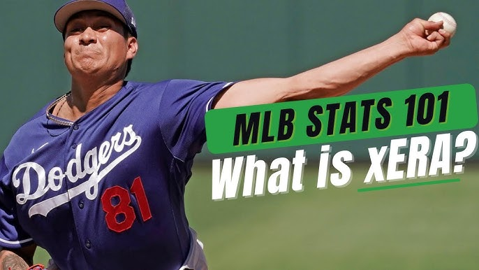

What is xERA?
Expected ERA (xERA) is a simple 1:1 translation of Expected Weighted On-Base Average (xwOBA), converted to the ERA scale. xwOBA takes into account the amount of contact (strikeouts, walks, hit by pitch) and the quality of that contact (exit velocity and launch angle), in an attempt to credit the pitcher or hitter for the moment of contact, not for what might happen to that contact thanks to other factors like ballpark, weather, or defense. By converting this to the ERA scale, it puts xwOBA in numbers that are more familiar, and allows it to be compared directly to the pitcher's actual ERA. (If you're familiar with FIP, or Fielding Independent Pitching, the idea is similar, just that now Statcast quality of contact can be included.)
Why is xERA important?
If a pitcher has an xERA that is significantly higher than his actual ERA, it is a indicator that the pitcher is getting lucky.
2024 NL(National League) xERA Leaders (As of 9/26/2024)
1. ATL Chris Sale: 2.79 xERA
2. PHI Zack Wheeler: 2.83 xERA
3. SDP Dylan Cease: 3.32 xERA
4. CHC Shota Imanaga: 3.47 xERA
5. PHI Cristopher Sánchez: 3.52 xERA
2024 AL(American League) xERA Leaders as of (9/26/2024)
1. DET Tarik Skubal: 2.70 xERA
2. SEA Logan Gilbert: 3.17 xERA
3. Bailey Ober: 3.20 xERA
4. BAL Corbin Burnes 3.27 xERA
5. KCR Cole Ragans: 3.27 xERA